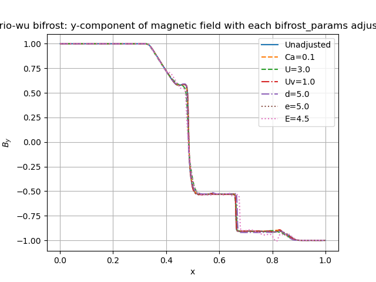

Brio& Wu experimemts¶
Here we will report the results of the Brio&Wu experiment. These studies were wone using the develop branch of Dispatch-Bifrost and hash 299c6d5
Bifrost Solver¶
- For the brio-wu experiment we use
gamma = 2.0
Final time = 0.1
where the equation of state is a gamma law.
Below is a table of the input parameters used for simulating the experiment in all three directions. These values are used in all verifications for the brio-wu experiment.
Quantity |
Left state |
Right state |
|---|---|---|
rho |
1 |
0.125 |
vx |
0 |
0 |
vy |
0 |
0 |
vz |
0 |
0 |
p |
1 |
0.1 |
The magnetic field values are different for the three direction, and are listed in the table below. These will also be used in all subsequent verification tests.
Quantity |
x |
y |
z |
|||
Left |
Right |
Left |
Right |
Left |
Right |
|
Bx |
0.75 |
0.75 |
0 |
0 |
1 |
-1 |
By |
1 |
-1 |
0.75 |
0.75 |
0 |
0 |
Bz |
0 |
0 |
1 |
-1 |
0.75 |
0.75 |
The initial Bifrost parameters used in the experiment are:
Initial Bifrost Parameters: |
|||||
|---|---|---|---|---|---|
Ca |
U |
Uv |
d |
e |
E |
0.01 |
0.3 |
0.1 |
0.5 |
0.5 |
0.9 |
Comparing densities in the x/y/z direction¶
The figure below shows the result of the denisties computed in each direction from the three input files. These were configured with the initial Bifrost Parameters listed in the above table.

All density profiles overlap.
Initial adjustments of the individual bifrost parameters¶
We adjust the bifrost parameters one by one while the remaining five parameters are held fixed. Initially, each parameter is increased by a factor 10 except from E, since E=9.0 led to an error while running. E is therefore increased by a factor of 5 initially. We also reduce each parameter by a factor of 10, and compare with the original results. The figures below we plot the resulting densities, the x-components of the velocity and the y-components of the magnetic field. The figures on the left shows the result of parameter increase, while the figures on the right shows the parameter reductions. Each figure has a legend indicating which parameter has been adjusted, includnig its corresponding value. The original parameter result is included in all plots.
We start with the density, shown below. .. image:: images_brio-wu_bifrost/brio-wu_init_adjust_rho.png
- width
45 %
{kind=link}
Image below shows the resulting velocities in x-direction from the parameter adjustments.
{kind=link}
{kind=link}
Below shows the y-component of the Magnetic field in the x-direction from the parameter adjustments.
{kind=link}
{kind=link}
The increase of the bifrost parameter E visibly affects all quantities. Another noticeable quantity is U, which is evident in all plots where it has been decreased. Another parameter affecting the result is the increased d. This is easiest to see in the plot of the x-velocity, where it lies above the other lines for 0.7<x<0.8. We adjust these parameters further to study their behaviour individually.
Single parameter adjustments¶
Adjusting U-parameter:


Adjusting d-parameter:


Adjusting E-parameter:
references